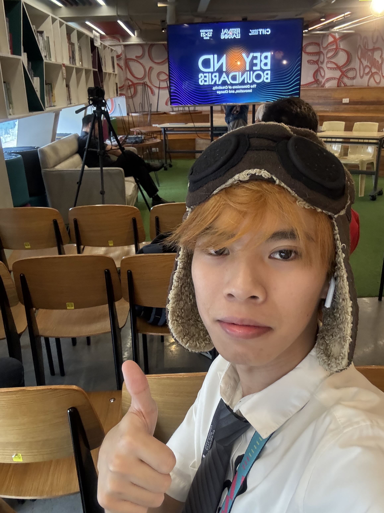

I'm Samuel, and I currently live in Marikina City, Philippines. I am a dedicated student of Bachelor of Science in Information Sytems at CIIT College of Arts and Technology. My journey into technology started with a simple curiosity about how video games were built, which quickly expanded into a passion for clean code and user experience design.
My main focus is on creating responsive, accessible websites, and I enjoy using tools like VS Code, and JavaScript to bring ideas to life. I believe that good design should be intuitive and invisible, allowing users to easily access the content.